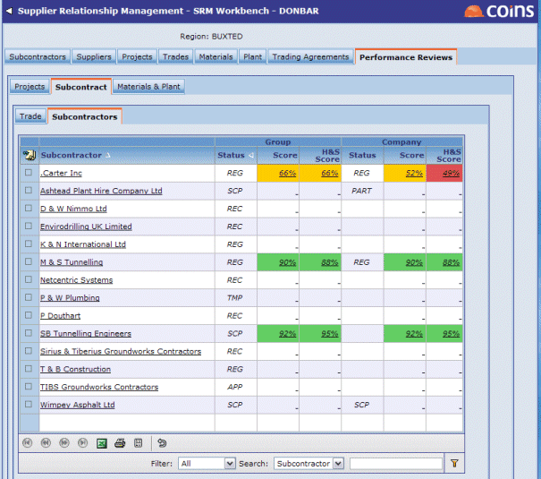

Performance Reviews in SRM
can inform you when performance reviews are required for companies based on their approval level or the value of orders with them. For example, you may want to always review your preferred and partner or subcontractors, so you would specify that orders for companies with the relevant approval levels (status codes) would require reviews. You may also decide to always review performance on high value orders, regardless of which or subcontractor they are with, so you would set a limit - orders above this value would require reviews.
Health and safety
You can focus on health and safety issues in subcontractor performance reviews by identifying review criteria that relate to health and safety, and show a separate total for these.

When you dig deeper to on the reviews, this shows the reviews for all orders placed on the company - it is not restricted to your user view.
Weighted reviews
You can set up review styles, which allow you to apply different weightings against each review question, and omit questions that aren't relevant, depending on the type of order.
Single entry
To reinforce the importance of reviews, you can prevent users from updating a review once they have entered it.
Review comments
You can enter comments against individual review questions, and you can set up so that comments are required if the reviewer enters a score that is lower than a set level.
See also: Performance Reviews in Procurement.
Performance reviews - configuration
To choose how decides whether performance reviews are required, use SRM/POREVMTH and SRM/SCREVMTH.
If either of these are set to AUTO:
- Use SRM/POREVLIM and SRM/SCREVLIM to set the value over which orders require a review.
- Use SRM/REVSTAT to determine which and subcontractors normally require reviews.
- Use SRM/POREVMIN and SRM/SCREVMIN to exclude low-value orders for and subcontractors who normally require reviews.
To specify which review criteria releate to health and safety, use SRM/SCREVH&S.
To set up weighted reviews:
- Set SRM/POREVMTH or SRM/SCREVMTH to WEIGHTED or WEIGHTED-OV.
- Use Performance Review Styles to set up the review styles for different types of order.
To prevent users updating reviews after they have entered them, use SRM/POREVLVL or SRM/SCREVLVL.
To enable comments for individual review questions, use SRM/POREVCOM or SRM/SCREVCOM, and to enforce comments for low scores, use SRM/POREVLOW or SRM/SCREVLOW.